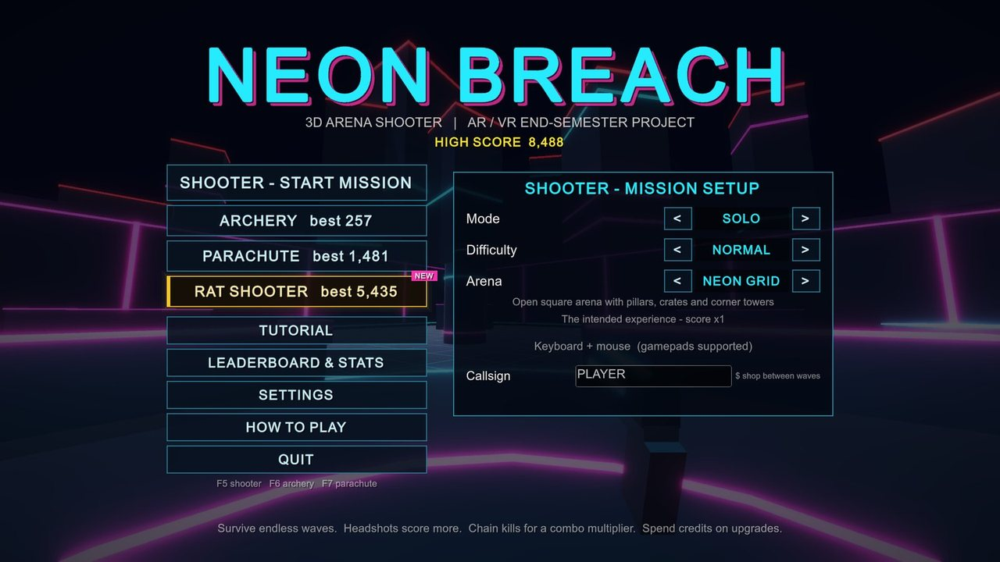

NEON BREACH is an immersive first-person game project built in Unity 6 (6000.5.5f1) for the Augmented and Virtual Reality course. It addresses a common weakness of student XR projects: a single demonstration scene that runs on one device, ignores comfort and performance, and cannot be evaluated without the headset it was built for. The project delivers four game modes in one code base, all launched from one main menu: a wave-based neon arena Shooter, an Archery range with physically simulated arrows and wind, a 3,000 m Parachute skydive with a canopy landing, and a cartoon Rat Shooter; a bonus Farm Sniper level is included as a standalone scene. All of them share one player, input, audio and user-interface framework.
The AR/VR layer is built on the OpenXR standard through Unity's XR Plug-in Management. The XR Hands package provides articulated hand tracking with gesture recognition (pinch and open palm), and AR Foundation with Unity's Meta OpenXR package provides a mixed-reality "breach" mode, in which the virtual arena disappears and enemies spawn along the player's real room boundary. A single PlayerInputState abstraction lets keyboard and mouse, gamepads, tracked controllers and bare hands drive identical gameplay code. VR comfort is designed in: a speed-driven tunnelling vignette, snap or smooth turning about the head, a seated mode, room-scale head following and no camera shake. A custom HRTF-style binaural spatializer (Woodworth interaural time difference, level difference and head-shadow filtering), controller haptics, NavMesh-driven enemy AI, quadratic-drag free-fall physics and arrow ballistics complete the feature set. Every model, texture, sound and level is generated procedurally in C# (123 scripts, about 31,000 lines).
During the preparation of this report the project was audited against the ten ESE criteria. Four gaps were found and fixed: the XR loader was not enabled, a Run-In-Background setting failed XR project validation, number keys mapped to the wrong Input System keys, and VR mode logged a field-of-view warning. The complete VR input and rendering pipeline was then verified end to end, without a headset, using the OpenXR Mock Runtime and the conformance-automation extension. A final polish pass then made small, verified improvements without rebuilding anything: an archery trajectory guide that uses the arrows' exact flight model, fade transitions on every mode start and on the results screen, and animated hover feedback for every button and mode card. All four modes were re-tested after these changes with no errors or warnings. Measured results on the development PC show average frame times of 2.5–3.3 ms (about 300–400 FPS) in every mode, well inside the 11.1 ms budget of a 90 Hz headset. The report documents the requirements, the literature, the architecture, the XR implementation, tracking and spatial registration, the generated assets, the user experience, the advanced features, testing, results and the demonstration plan, with real screenshots, Unity Editor captures and source listings as evidence.
Keywords: Virtual Reality, Mixed Reality, OpenXR, Unity 6, XR Hands, AR Foundation, hand tracking, spatial audio (HRTF), cybersickness, procedural content generation, NavMesh AI, game physics.
We express our sincere gratitude to our project guide, Shubhagi Tamsekar Ma’am, for her guidance, encouragement and valuable feedback at every stage of this work. Her suggestions on the scope of the project, on immersive interaction and on the evaluation criteria shaped both the system and this report.
We thank the faculty and staff of COEP Technological University for the Augmented and Virtual Reality course, which introduced us to the theory of tracking, registration and immersive interaction that this project puts into practice, and for the laboratory and computing facilities made available to us.
We also acknowledge the open standards and documentation that made the project possible: the Khronos Group's OpenXR specification, and Unity Technologies' documentation for XR Plug-in Management, OpenXR, XR Hands, AR Foundation, the Input System and AI Navigation.
Finally, we thank our families and friends for their constant support throughout the semester.
Yash Sawant (MIS 642402009)
Shivprakash Chavan (MIS 612302059)
This report is organised around the ten ESE evaluation criteria. Each criterion has its own chapter (Chapters 2–11), which starts on a new page and opens with an evidence box listing the strongest evidence it contains. The table below lets an examiner jump straight to that evidence.
| # | Evaluation criterion | Chapter | Key evidence in this report |
|---|---|---|---|
| 1 | Problem Definition, Objectives & Requirements | [[ch2]] | Problem statement and motivation (11.1 ms VR frame budget, cybersickness, device fragmentation); 9 measurable objectives; 24 functional and 10 non-functional requirements with verification status; scope and expected outcomes |
| 2 | Literature Survey & Technical Background | [[ch3]] | Reality–virtuality continuum; tracking technologies; OpenXR and the Unity XR stack; cybersickness, spatial-audio, navigation and procedural-generation research; comparison with existing VR/MR applications; 30 references |
| 3 | System Architecture & Design | [[ch4]] | Layered architecture, module decomposition, class relationships, frame execution order, game state machine, mode-switching sequence, data flow, scene hierarchies captured from the Unity Editor |
| 4 | AR/VR Technology Implementation | [[ch5]] | OpenXR configuration (gap found and fixed), 7 enabled OpenXR features, VR rig, controller mapping, XR Hands gestures, AR Foundation MR mode, haptics, world-space VR UI; end-to-end VR verification with the OpenXR Mock Runtime and real VR frames |
| 5 | Tracking, Registration & Spatial Understanding | [[ch6]] | Coordinate systems and the OpenXR↔Unity handedness conversion; transform chain with measured registration values; height calibration, room-scale head following, snap turn about the head; MR boundary registration (walls, spawn points, NavMesh); collision layers and raycasting |
| 6 | 3D Modelling, Assets & Environment | [[ch7]] | Procedurally generated arenas, characters, weapons, archery range, island, farm and farmyard; materials, shaders, lighting, procedural animation, VFX; asset pipeline; measured optimisation |
| 7 | Interaction, UI/UX & User Experience | [[ch8]] | Main menu and navigation flow, HUDs of all four game modes, polish-pass hover animation, fade transitions and archery trajectory guide, 8-step tutorial, 6 settings tabs, 4 languages, VR laser-pointer menu and wrist display, controls for 3 device types, usability-heuristic review |
| 8 | Advanced AR/VR Features | [[ch9]] | Feature matrix that separates verified, verified in the Mock Runtime, needs hardware and planned; ballistics and free-fall physics equations; NavMesh AI; binaural audio mathematics; comfort system; haptics; camera systems |
| 9 | Technical Documentation & Project Report | [[ch10]] | Measured hardware and software environment, tools, code metrics, important scripts, methodology, build steps, test plan with 25 test cases and their observed results, bugs fixed, limitations |
| 10 | Final Demonstration & Presentation | [[ch11]] | Demo set-up checklist, execution procedure, a timed 15-minute script, features to show in each mode with expected outcomes and rehearsal results, a criterion-to-demo mapping, technical talking points and a contingency plan |
| Term | Meaning | Term | Meaning |
|---|---|---|---|
| AR / VR / MR / XR | Augmented / Virtual / Mixed / Extended Reality | HMD | Head-mounted display |
| OpenXR | Khronos Group's royalty-free standard API for XR runtimes and devices | DoF | Degrees of freedom (3DoF orientation, 6DoF orientation + position) |
| AR Foundation | Unity's cross-platform AR framework (sessions, camera, planes) | XR Hands | Unity package exposing 26 tracked joints per hand |
| HRTF | Head-related transfer function | ITD / ILD | Interaural time / level difference |
| NavMesh | Navigation mesh used for AI path-finding | AGL | Altitude above ground level |
| FOV | Field of view | ADS | Aim down sights |
| IMGUI | Unity's immediate-mode GUI system | HUD | Heads-up display |
| CC | Unity CharacterController (capsule collider with move-and-slide) | FR / NFR | Functional / non-functional requirement |
| SPI | Single-pass instanced stereo rendering | MR mode | The project's mixed-reality "breach" mode |
| PlayerPrefs | Unity's persistent key–value store (settings, scores) | Mock Runtime | Unity OpenXR Mock Runtime (simulated OpenXR device) |